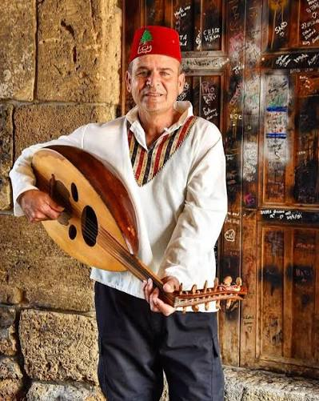
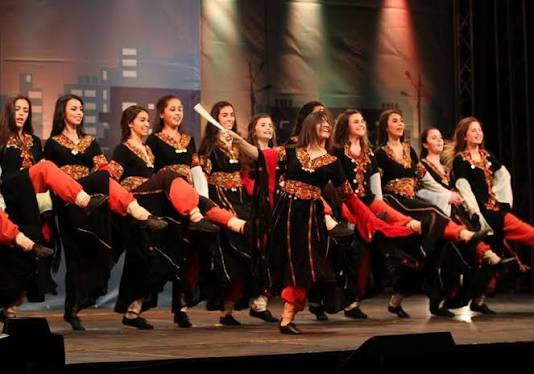

Fairuz
Perhaps the most beloved singer in the Arab world, her songs about Lebanon are still played every day on the radio.
My Lebanon Guide
From the voice of Fairuz to the sound of the oud, music has always carried Lebanon's stories.
Perhaps the most beloved singer in the Arab world, her songs about Lebanon are still played every day on the radio.
A pear-shaped, fretless string instrument at the heart of Lebanese music, known for its deep, resonant sound.

A lively line dance performed at weddings and festivals, danced to fast drumming and the buzzing mijwiz.

A new generation blends traditional instruments with pop and hip-hop, carrying Lebanon's sound far beyond the region.